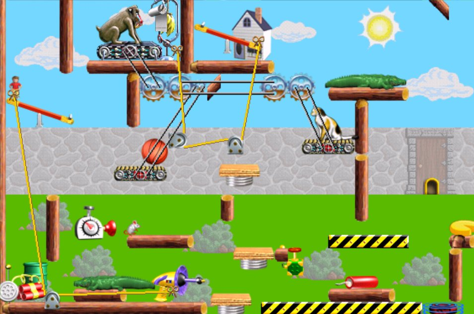

PC用ゲーム「インクレディブル・マシーン」関係 2026/10/1更新
「インクレディブル・マシーン」（The
Incredible Machine）の自家製パズル（homemade puzzle）を探してみた
ピタゴラスイッチのような装置を組み立てるという内容の過去のPC用名作パズルゲーム「インクレディブル・マシーン」（https://ja.wikipedia.org/wiki/インクレディブル・マシーン）は今やネットでも情報は少ない。唯一まとまった情報が公開されているのは
「for all increyers」（https://sites.google.com/site/for-all-incrayers/）
のみの様子。ただし 新規コンテンツは無い。
インクレディブル・マシーンにはメーカー製のパズルが収録されているが、それとは別にプレイヤーが自家製パズルを作成することができる。かつては色々な人が作成してネットに公開していたものだが今や日本語のパズルは上記サイトの「自家製パズル」と「for
all incrayersアーカイブ」とから入手できるだけ。それでも1000個以上のパズルを入手可。その「自家製パズル」については
インターネット・アーカイブ上の過去のページ
https://web.archive.org/web/20080309033048/http://ist.oops.jp/tim/index.php?%BC%AB%B2%C8%C0%BD%A5%D1%A5%BA%A5%EB%C1%D2%B8%CB
で説明を見ることができる。
海外で自家製パズルを公開している個人サイトは
「The Incredible Machine: Contraptions Levels」（https://www.kieranmillar.com/incmachine/）
しか見つからなかった。
海外ではかつて TIM-Exchange.com
というフォーラムがあって色々な人が自家製パズルをアップロードしていたようだ。それらをまとめた
Tim-Exchange+Contraptions+Database+2007+to+2012.zip
というファイルが
https://mega.nz/#!F4AF1YjK!N9ncxXjVVQQbJYOLOknuISg4C5Yqorpxw9FAcCDMAgA
や
https://archive.org/details/tim-exchange-contraptions-database-2007to-2012.zip
からダウンロードできる。中身は整理されておらず誰が何を作成したのか不明で玉石混交だろうが1500個以上のパズルを入手可。
「インクレディブル・マシーン」の購入
ゲーム本体は2026年のいつまでか gog.com で「The
Incredible Machine Mega Pack」という名前の復刻版（英語版）を安価で購入できたのだが販売中止になってしまった。どうやら現在の版権者であるディズニーがそうしてしまったらしい。パックには、
1. 「もっともっとインクレディブル・マシーン」(The
Even More Incredible Machine)
2. 「インクレディブル・マシーン3」（The
Incredible Machine 3）
3. 「インクレディブル・マシーン
コントラプションズ」（Return of The Incredible Machine:
Contraptions）
4. 「インクレディブル・マシーン
コントラプションズ2」（The Incredible Machine: Even
More Contraptions）
の４作が入っていたのだが・・・。中古メディア以外に現在正規にゲームを入手する方法はなさそうだ（ネット上に不正アップロードは見つかるものの）。
上の4つは発売順に並べてある。使い勝手は4.が最もよく、また過去作用の自家製パズルファイルを皆開くことができる。3.は4.とほとんど同じで収録パズルも同じなので4.を持っていれば購入する意味はないように思う。
自家製パズルのバージョン
自家製パズルファイル（*.TIM）はそれを作成したゲームによってフォーマットが異なる。
https://moddingwiki.shikadi.net/wiki/The_Incredible_Machine_Level_Format
に書かれているようにファイル冒頭のマジックNo.をバイナリーエディターで見れば判別できる。ただしそのページには書かれていなかったが「インクレディブル・マシーン
コントラプションズ」（Return of The Incredible Machine:
Contraptions）と「インクレディブル・マシーン
コントラプションズ2」（The Incredible Machine: Even
More Contraptions）はフォーマットが異なり、マジックNo.は
EF AC 15 01 であった。
バージョン間の互換性については
https://sites.google.com/site/for-all-incrayers/Home/info/compatibility-among-versions
に書かれている。
「インクレディブル・マシーン3」等はかつて日本語版が販売されていたのでタイトルとゴールが日本語で書かれた自家製パズルがある。「インクレディブル・マシーン3」の英語版ではタイトルは文字化けするがはゴールの記述は日本語で読める。それ以外の英語版で全部文字化けしてもパズルファイルを「メモ帳」等のテキストエディターで開けば冒頭に書かれているタイトルとゴールとを読むことができる。
「インクレディブル・マシーン」のヘルプファイル（*.HLP）を
Windows 10/11 で開く方法
マイクロソフトは旧型式のヘルプファイル（*.HLP）を
Windows 10/11 で開けなくしてしまっているためゲーム中からヘルプをクリックしても開けない。
Googleで「Windows10・11用WinHlp32.exeインストールバッチファイル」と検索すると開く方法がわかる。
「インクレディブル・マシーン3」の表示を大きくする方法
「インクレディブル・マシーン3」はウィンドウ表示で、Windowsの解像度が高い場合
表示が小さくなってしまう。Windowsの解像度を変更してプレイすればいいのだが一々設定変更するのはちょっと面倒。
DisplayChange（https://www.vector.co.jp/soft/mac/util/se034470.html
）というフリーソフトを使うと起動時に解像度を変更して終了時に元に戻すというショートカットを作ることができて便利。
「インクレディブル・マシーン3」のBGMを
Windows 10/11 で高品質再生する方法
VirtualMIDISynth というフリーソフトを導入する。（https://www.gigafree.net/media/midi/VirtualMIDISynth.html）
ちなみにMIDIマッパー設定時の選択肢にある
Microsoft GS Wavetable Synth は Windows に標準搭載の貧弱なMIDI音源。VirtualMIDISynth
で良いサウンドフォントを使うと全然違う音を聞ける。
「インクレディブル・マシーン3
」の日本語版
「インクレディブル・マシーン3」のWindows 95/98用日本語版の中古品はぼったくり価格でしか入手できないようだが入手できたら
Windows 10/11 では上記「for all increyers」（https://sites.google.com/site/for-all-incrayers/）の「互換性パッチ」のページを参照してパッチを当てる。
「インクレディブル・マシーン コントラプションズ2」の画面例
